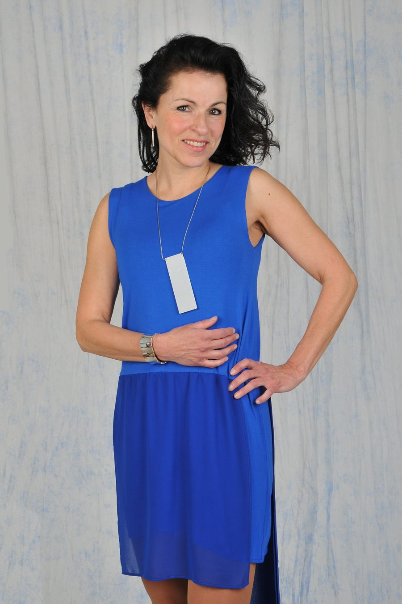
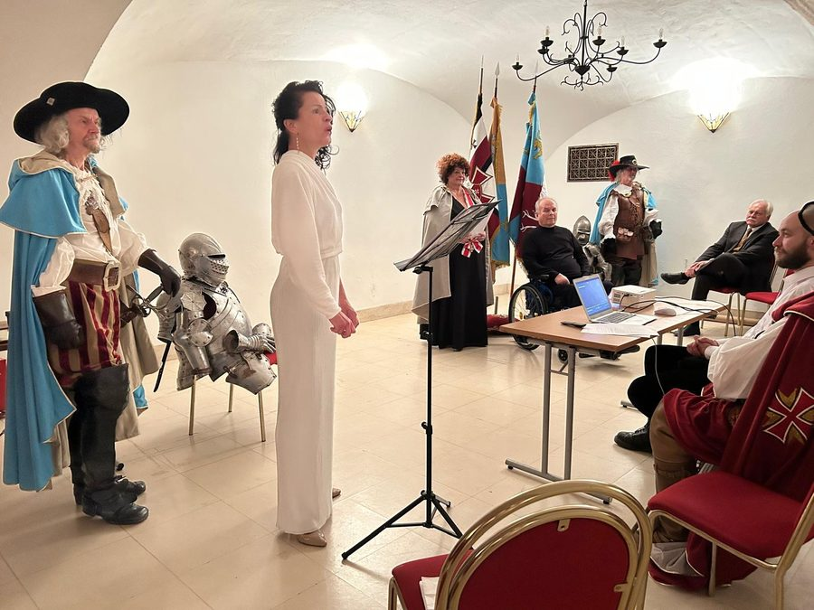

Lenka Seidlová
Jsem zpěvačka, která ráda propojuje hudbu se slovem. Vystupuji na vernisážích, slavnostních setkáních i kulturních akcích pro děti i dospělé a ke každému programu přistupuji s citem pro dané místo a publikum.

Hudebně-literární programy na míru
Spojuji zpěv a mluvené slovo do citlivě laděných vystoupení, která vytvářím na míru různým událostem – od vernisáží po slavnostní setkání. Ráda svým programem obohatím kulturní akce pro děti i dospělé.
Hudební pohádky
V mých autorských hudebních pohádkách se propojuje zpěv, vyprávění a živý kontakt s publikem. Každý příběh vzniká s láskou k hudbě. Pohádky jsou určeny pro malé i velké – hodí se do jesliček, mateřských škol, na základní školy, ale také mezi rodiny s nejmenšími dětmi nebo do zdravotnických zařízení či domovů seniorů.
Načítám pohádky…
Vystoupení
Nabízím hudební vystoupení pro slavnostní i komorní příležitosti. Zpívám na vernisážích, rodinných oslavách i oficiálních událostech. Program připravuji vždy s citem k místu, publiku a atmosféře.
Nadcházející koncerty →